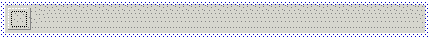
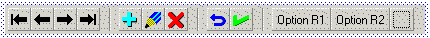
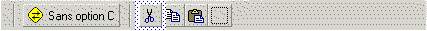

La fenêtre d’édition d’une barre d’outils affiche des écrans du type suivant :
Barre d’outils vide (état initial après création de la barre)

Barre d’outils à 14 boutons (9 graphiques, 2 textes et 3 séparateurs)
(aucun bouton sélectionné)

Barre de surcharge à 6 boutons (3 graphiques, 1 graphique + texte et 2 séparateurs)
(bouton Couper sélectionné)

Ces écrans comprennent les éléments suivants :
Barre de boutons.Les boutons de la barre d’outils sont présentés horizontalement. Un bouton peut être de type « terminal » ou « séparateur » ; s’il est de type terminal, il peut être de nature « normal », « Case à cocher » ou « Bouton radio » et afficher soit une image bitmap (bouton graphique), soit un texte (bouton texte), soit les deux.
Cadre en pointillés noirs.
La barre de boutons affiche systématiquement un dernier bouton fictif (cadre en pointillés noirs) : ceci permet de créer un bouton derrière le dernier bouton actuel (la touche Insert effectuant la création avant le bouton couramment sélectionné).
Cadre(s) en pointillés bleus.
Le ou les boutons couramment sélectionnés sont visualisés par un encadrement en pointillés de couleur bleue.